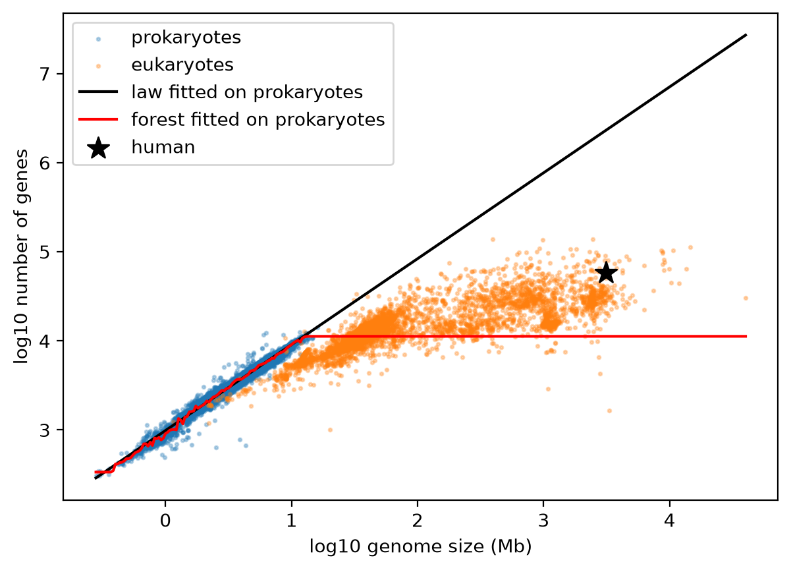

About 58 000 are annotated (57 816). A forest trained on the same prokaryotes says 11 000: closer, but only because it repeats the largest value it has seen. R² on eukaryotes: law −11.9, forest −0.04.